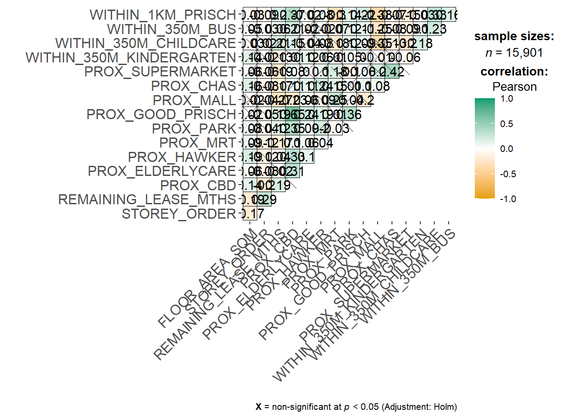

pacman::p_load(sf, spdep, GWmodel,
SpatialML, tmap,
tidymodels, tidyverse,
gtsummary,
rpart, rpart.plot,
ggstatsplot, performance)Geographically Weighted Predictive Models
In-class Exercise 9
Installing and Loading R packages
Preparing Data
Reading Data
rs_sf <- read_rds("data/rds/HDB_resale.rds")rs_sfSimple feature collection with 15901 features and 17 fields
Geometry type: POINT
Dimension: XY
Bounding box: xmin: 11597.31 ymin: 28217.39 xmax: 42623.63 ymax: 48741.06
Projected CRS: SVY21 / Singapore TM
# A tibble: 15,901 × 18
RESALE_PRICE FLOOR_AREA_SQM STOREY_ORDER REMAINING_LEASE_MTHS PROX_CBD
<dbl> <dbl> <int> <dbl> <dbl>
1 330000 92 1 684 8.82
2 360000 91 3 738 9.84
3 370000 92 1 733 9.56
4 375000 99 2 700 9.61
5 380000 92 2 715 8.35
6 380000 92 4 732 9.49
7 385000 92 3 706 8.96
8 395000 92 2 745 9.81
9 395000 93 4 731 10.3
10 395000 91 3 725 10.4
# ℹ 15,891 more rows
# ℹ 13 more variables: PROX_ELDERLYCARE <dbl>, PROX_HAWKER <dbl>,
# PROX_MRT <dbl>, PROX_PARK <dbl>, PROX_GOOD_PRISCH <dbl>, PROX_MALL <dbl>,
# PROX_CHAS <dbl>, PROX_SUPERMARKET <dbl>, WITHIN_350M_KINDERGARTEN <int>,
# WITHIN_350M_CHILDCARE <int>, WITHIN_350M_BUS <int>,
# WITHIN_1KM_PRISCH <int>, geometry <POINT [m]>Data Sampling
We will split the data into 50% training and 50% testing.
set.seed(1234) # Set seed to keep the sample consistent
resale_split <- initial_split(
rs_sf,
prop=5/10,)
train_sf <- training(resale_split)
test_sf <- testing(resale_split)From simple feature object, we drop the geometry, turning it into a tibble data.frame. We then turn it into a normal base R dataframe.
train_df <- train_sf %>%
st_drop_geometry() %>%
as.data.frame()
test_df <- test_sf %>%
st_drop_geometry() %>%
as.data.frame()EDA
Computing Correlation Matrix
rs_df <- rs_sf %>%
st_drop_geometry() %>%
as.data.frame()
ggcorrmat(rs_df[,2:17])
Building a non-spatial multiple linear regression
price_mlr <- lm(RESALE_PRICE ~
FLOOR_AREA_SQM +
STOREY_ORDER +
REMAINING_LEASE_MTHS +
PROX_CBD +
PROX_ELDERLYCARE +
PROX_HAWKER +
PROX_MRT +
PROX_PARK +
PROX_GOOD_PRISCH +
PROX_MALL +
PROX_CHAS +
PROX_SUPERMARKET +
WITHIN_350M_KINDERGARTEN +
WITHIN_350M_CHILDCARE +
WITHIN_350M_BUS +
WITHIN_1KM_PRISCH,
data=train_df)
summary(price_mlr)
Call:
lm(formula = RESALE_PRICE ~ FLOOR_AREA_SQM + STOREY_ORDER + REMAINING_LEASE_MTHS +
PROX_CBD + PROX_ELDERLYCARE + PROX_HAWKER + PROX_MRT + PROX_PARK +
PROX_GOOD_PRISCH + PROX_MALL + PROX_CHAS + PROX_SUPERMARKET +
WITHIN_350M_KINDERGARTEN + WITHIN_350M_CHILDCARE + WITHIN_350M_BUS +
WITHIN_1KM_PRISCH, data = train_df)
Residuals:
Min 1Q Median 3Q Max
-187332 -39309 -1965 35953 312626
Coefficients:
Estimate Std. Error t value Pr(>|t|)
(Intercept) 105360.313 11968.953 8.803 < 2e-16 ***
FLOOR_AREA_SQM 2802.967 103.228 27.153 < 2e-16 ***
STOREY_ORDER 14044.146 383.517 36.619 < 2e-16 ***
REMAINING_LEASE_MTHS 345.020 5.196 66.405 < 2e-16 ***
PROX_CBD -17918.468 263.037 -68.122 < 2e-16 ***
PROX_ELDERLYCARE -14468.531 1124.109 -12.871 < 2e-16 ***
PROX_HAWKER -17100.772 1459.316 -11.718 < 2e-16 ***
PROX_MRT -31603.320 1961.445 -16.112 < 2e-16 ***
PROX_PARK -9334.205 1705.204 -5.474 4.54e-08 ***
PROX_GOOD_PRISCH 2787.434 383.317 7.272 3.88e-13 ***
PROX_MALL -12319.686 2273.741 -5.418 6.20e-08 ***
PROX_CHAS -9057.322 7198.516 -1.258 0.208
PROX_SUPERMARKET -25758.080 5057.112 -5.093 3.60e-07 ***
WITHIN_350M_KINDERGARTEN 8706.680 719.253 12.105 < 2e-16 ***
WITHIN_350M_CHILDCARE -4536.914 398.135 -11.395 < 2e-16 ***
WITHIN_350M_BUS 1067.280 252.318 4.230 2.36e-05 ***
WITHIN_1KM_PRISCH -8192.393 553.062 -14.813 < 2e-16 ***
---
Signif. codes: 0 '***' 0.001 '**' 0.01 '*' 0.05 '.' 0.1 ' ' 1
Residual standard error: 60850 on 7933 degrees of freedom
Multiple R-squared: 0.7423, Adjusted R-squared: 0.7417
F-statistic: 1428 on 16 and 7933 DF, p-value: < 2.2e-16Revising mlr model
We want to remove PROX_CHAS because it doesn’t make sense logically to predict resale price with this variable.
train_df <- train_df %>%
select(-c(PROX_CHAS)) # exclude this variable
test_df <- test_df %>%
select(-c(PROX_CHAS))
train_sf <- train_sf %>%
select(-c(PROX_CHAS))
test_sf <- test_sf %>%
select(-c(PROX_CHAS))price_mlr <- lm(RESALE_PRICE ~
FLOOR_AREA_SQM +
STOREY_ORDER +
REMAINING_LEASE_MTHS +
PROX_CBD +
PROX_ELDERLYCARE +
PROX_HAWKER +
PROX_MRT +
PROX_PARK +
PROX_GOOD_PRISCH +
PROX_MALL +
PROX_SUPERMARKET +
WITHIN_350M_KINDERGARTEN +
WITHIN_350M_CHILDCARE +
WITHIN_350M_BUS +
WITHIN_1KM_PRISCH,
data=train_df)
summary(price_mlr)
Call:
lm(formula = RESALE_PRICE ~ FLOOR_AREA_SQM + STOREY_ORDER + REMAINING_LEASE_MTHS +
PROX_CBD + PROX_ELDERLYCARE + PROX_HAWKER + PROX_MRT + PROX_PARK +
PROX_GOOD_PRISCH + PROX_MALL + PROX_SUPERMARKET + WITHIN_350M_KINDERGARTEN +
WITHIN_350M_CHILDCARE + WITHIN_350M_BUS + WITHIN_1KM_PRISCH,
data = train_df)
Residuals:
Min 1Q Median 3Q Max
-186791 -39185 -2118 35951 313259
Coefficients:
Estimate Std. Error t value Pr(>|t|)
(Intercept) 105081.249 11967.337 8.781 < 2e-16 ***
FLOOR_AREA_SQM 2790.633 102.766 27.155 < 2e-16 ***
STOREY_ORDER 14037.646 383.497 36.604 < 2e-16 ***
REMAINING_LEASE_MTHS 345.614 5.174 66.794 < 2e-16 ***
PROX_CBD -17906.932 262.886 -68.117 < 2e-16 ***
PROX_ELDERLYCARE -14587.598 1120.160 -13.023 < 2e-16 ***
PROX_HAWKER -17434.105 1435.120 -12.148 < 2e-16 ***
PROX_MRT -31752.019 1957.953 -16.217 < 2e-16 ***
PROX_PARK -9365.814 1705.082 -5.493 4.08e-08 ***
PROX_GOOD_PRISCH 2757.600 382.597 7.208 6.22e-13 ***
PROX_MALL -12219.544 2272.431 -5.377 7.78e-08 ***
PROX_SUPERMARKET -28048.965 4718.151 -5.945 2.88e-09 ***
WITHIN_350M_KINDERGARTEN 8721.544 719.183 12.127 < 2e-16 ***
WITHIN_350M_CHILDCARE -4515.186 397.774 -11.351 < 2e-16 ***
WITHIN_350M_BUS 1083.952 251.979 4.302 1.71e-05 ***
WITHIN_1KM_PRISCH -8200.760 553.042 -14.828 < 2e-16 ***
---
Signif. codes: 0 '***' 0.001 '**' 0.01 '*' 0.05 '.' 0.1 ' ' 1
Residual standard error: 60850 on 7934 degrees of freedom
Multiple R-squared: 0.7422, Adjusted R-squared: 0.7417
F-statistic: 1523 on 15 and 7934 DF, p-value: < 2.2e-16…
Extract the x,y coordinates of the full, training and test data sets.
coords <- st_coordinates(rs_sf)
coords_train <- st_coordinates(train_sf)
coords_test <- st_coordinates(test_sf)Create recursive partitioning
set.seed(1234)
rs_rp <- rpart(
formula = RESALE_PRICE ~
FLOOR_AREA_SQM +
STOREY_ORDER +
REMAINING_LEASE_MTHS +
PROX_CBD +
PROX_ELDERLYCARE +
PROX_HAWKER +
PROX_MRT +
PROX_PARK +
PROX_GOOD_PRISCH +
PROX_MALL +
PROX_SUPERMARKET +
WITHIN_350M_KINDERGARTEN +
WITHIN_350M_CHILDCARE +
WITHIN_350M_BUS +
WITHIN_1KM_PRISCH,
data=train_df)
rs_rpn= 7950
node), split, n, deviance, yval
* denotes terminal node
1) root 7950 1.139546e+14 433705.6
2) PROX_CBD>=7.974483 6665 4.472144e+13 403736.0
4) REMAINING_LEASE_MTHS< 1020.5 4228 1.573100e+13 370187.4
8) PROX_GOOD_PRISCH>=3.629405 2271 3.851141e+12 340796.1 *
9) PROX_GOOD_PRISCH< 3.629405 1957 7.641480e+12 404294.6 *
5) REMAINING_LEASE_MTHS>=1020.5 2437 1.597594e+13 461940.1
10) PROX_CBD>=10.40657 2331 9.762718e+12 451754.4
20) PROX_GOOD_PRISCH>=4.866983 1123 2.801796e+12 423493.8 *
21) PROX_GOOD_PRISCH< 4.866983 1208 5.230246e+12 478026.4 *
11) PROX_CBD< 10.40657 106 6.532500e+11 685929.1 *
3) PROX_CBD< 7.974483 1285 3.219685e+13 589151.4
6) REMAINING_LEASE_MTHS< 930.5 745 6.613365e+12 486637.6
12) FLOOR_AREA_SQM< 98.5 451 2.446537e+12 442460.5 *
13) FLOOR_AREA_SQM>=98.5 294 1.936449e+12 554405.7 *
7) REMAINING_LEASE_MTHS>=930.5 540 6.952722e+12 730582.5
14) REMAINING_LEASE_MTHS< 1071.5 314 2.461969e+12 676641.3 *
15) REMAINING_LEASE_MTHS>=1071.5 226 2.307737e+12 805527.4 *Let’s visualize the recursive partitioning
rpart.plot(rs_rp)
set.seed(1234)
rs_rf <- ranger(
formula = RESALE_PRICE ~
FLOOR_AREA_SQM +
STOREY_ORDER +
REMAINING_LEASE_MTHS +
PROX_CBD +
PROX_ELDERLYCARE +
PROX_HAWKER +
PROX_MRT +
PROX_PARK +
PROX_GOOD_PRISCH +
PROX_MALL +
PROX_SUPERMARKET +
WITHIN_350M_KINDERGARTEN +
WITHIN_350M_CHILDCARE +
WITHIN_350M_BUS +
WITHIN_1KM_PRISCH,
data=train_df,
importance="impurity") # need this line to get the variable importance in the output
rs_rfRanger result
Call:
ranger(formula = RESALE_PRICE ~ FLOOR_AREA_SQM + STOREY_ORDER + REMAINING_LEASE_MTHS + PROX_CBD + PROX_ELDERLYCARE + PROX_HAWKER + PROX_MRT + PROX_PARK + PROX_GOOD_PRISCH + PROX_MALL + PROX_SUPERMARKET + WITHIN_350M_KINDERGARTEN + WITHIN_350M_CHILDCARE + WITHIN_350M_BUS + WITHIN_1KM_PRISCH, data = train_df, importance = "impurity")
Type: Regression
Number of trees: 500
Sample size: 7950
Number of independent variables: 15
Mtry: 3
Target node size: 5
Variable importance mode: impurity
Splitrule: variance
OOB prediction error (MSE): 738005688
R squared (OOB): 0.9485198 vi <- as.data.frame(rs_rf$variable.importance)
vi$variables <- rownames(vi) # make it two columns, vi and variable name
vi <- vi %>%
rename(vi = "rs_rf$variable.importance")ggplot(data = vi,
aes(x=vi,
y=reorder(variables, vi))) + # reorder() sorts the variables based on vi
geom_bar(stat="identity")
Compare Model Performance
Saving predicted output of geographically weighted random forest and preparing final data table
grf_pred <- read_rds("data/models/grf_pred.rds")
grf_pred_df <- as.data.frame(grf_pred)cbind() is used to append the predicted values onto the test_df
test_pred <- test_df %>%
select(RESALE_PRICE) %>%
cbind(grf_pred_df)Saving predicted output of random forest and preparing final data table
rf_pred <- predict(rs_rf, test_df)rf_pred_df <- as.data.frame(rf_pred$predictions) %>%
rename(rf_pred = "rf_pred$predictions")test_pred <- cbind(test_pred,rf_pred_df)Saving predicted output of multiple linear regression and preparing final data table
rs_mlr <- read_rds("data/models/rs_mlr.rds")mlr_pred <- predict(rs_mlr, test_df)mlr_pred_df <- as.data.frame(mlr_pred) %>%
rename(mlr_pred = "mlr_pred")test_pred <- cbind(test_pred,
mlr_pred_df)yardstick::rmse(test_pred,
RESALE_PRICE,
mlr_pred)# A tibble: 1 × 3
.metric .estimator .estimate
<chr> <chr> <dbl>
1 rmse standard 61617.Transpose the table
mc <- test_pred %>%
pivot_longer (cols = c(2:4),
names_to = "models",
values_to = "predicted")mc %>%
group_by(models) %>%
yardstick::rmse(RESALE_PRICE,
predicted)# A tibble: 3 × 4
models .metric .estimator .estimate
<chr> <chr> <chr> <dbl>
1 grf_pred rmse standard 28745.
2 mlr_pred rmse standard 61617.
3 rf_pred rmse standard 28348.